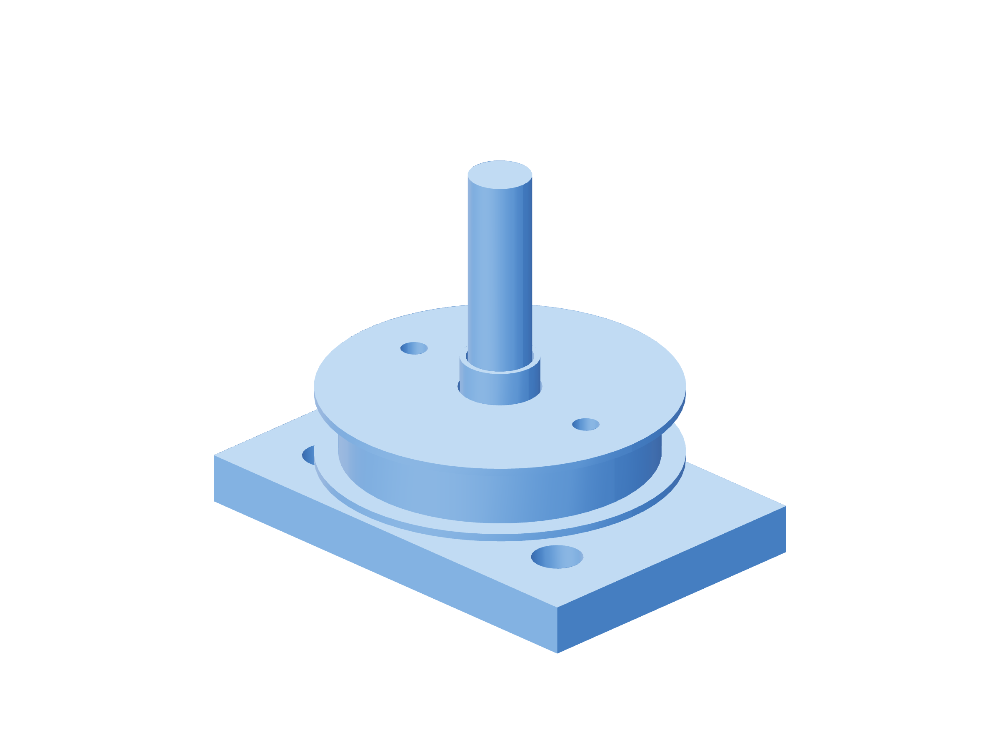

Retention / torque fixture89 / 179
Characterize the cord redirect first
A direct hanging weight grades a horizontal screw on the bench. The redirect turns a vertical hanging load into a tangential pull for an installed or inclined screw.
AddCord pulley / bearing cap · 608ZZ · M8 × 50 smooth-shank axle / metal contact tubes · 2 M3 × 20 · metal bracket · two 200 g cups
Tools / setupMetal vise · scale · cord · catch for both cups

- Clamp only the metal contact tubes and 608 inner race on the smooth M8 axle. Retain the outer race with its cap / two M3 × 20 joints; verify the pulley turns freely.
- Hang equal complete 200 g loads on both cord ends, including cups and cord attachment.
- Add at most 5 g to either side in separate trials; both directions must move freely. Record the actual threshold.
- Place the redirect to give a tangential horizontal cord at the installed lever and a vertical load after the pulley; repeat the calibration before each torque check.
Ready when
Both directions move with ≤5 g imbalance, bounding redirect loss to ≤0.049 N or ≤0.0049 N·m at the 100 mm arm. A larger or inconsistent imbalance fails the redirect. Correct its bearing, cord track and alignment; do not assign holding torque from an uncharacterized pulley.